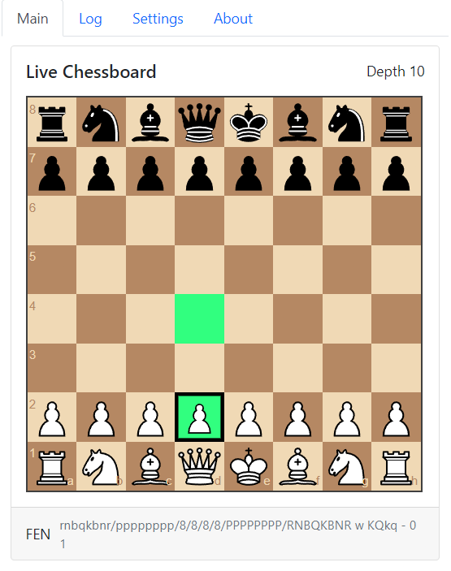
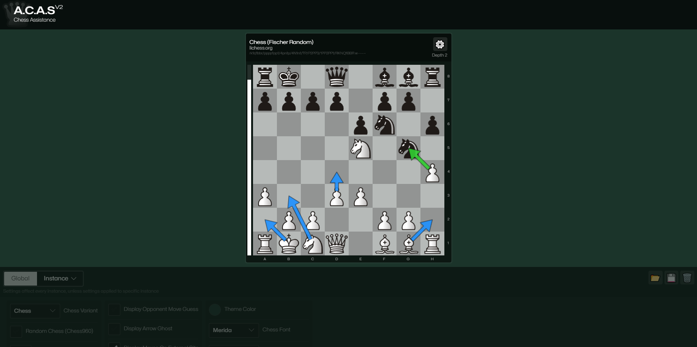
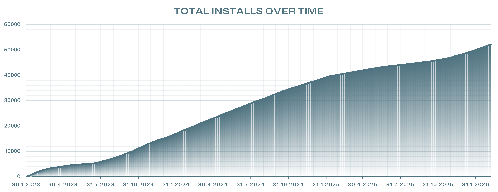
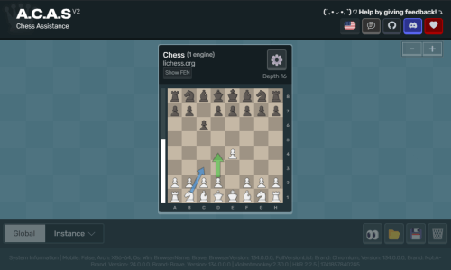
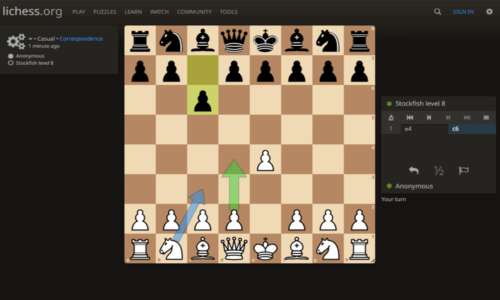

Blog 📝
History of A.C.A.S
I (Haka) gave birth to A.C.A.S v1.0 on Jan 30, 2023. It was the first of its kind userscript on GreasyFork. There had always been extensions and external programs that did the same thing, but nothing was as easy to use as A.C.A.S. The goal was to be very easy to use with clean UI. Here's a screenshot of the v1.0,

I had already developed userscripts for two years at that point, but hadn't played chess; literally zero, nada, experience. How do chess engines work? What's UCI or a FEN? Most importantly, how does one even play chess in the first place? Had to learn a lot and there were times when people asked for features I didn't even know were a thing in chess. "En passant? Sorry, I don't speak that language."
The first version of A.C.A.S took a lot of Googling even though it was made in a weekend. It felt like there wasn't much easy to understand information about communicating with chess engines, so the engine was a black box to me. Credit where it's due, I relied heavily on Lozza.js, because it had a web GUI with the engine already running. It was written in JS, so I could see how it works behind the scenes. I learned a lot from it, and imitated a lot of what it was doing at the start. I'm lucky to have open source projects from smart people to learn from!
Once I got Lozza running on the userscript, I used a previous project I made called UserGUI as the GUI library. A.C.A.S v1 had basic settings for setting the engine ELO, and for enabling external move highlighting. It didn't have the move arrows yet since highlighting the square was easier to implement. Also, only chess.com was supported. The project gained installs organically without me having to advertise anything, and quickly gained more installs that I had ever gotten on any of my userscripts.
Everything was working fine, but it didn't take long to realize that JS based chess engines aren't that fast to calculate deep depths. Problem was that many of the powerful engines at the time were blocked by chess.com's CORS policies. I had to find a way to calculate the moves externally. I never considered fetching the moves from a server an option since it would cost a lot, not be privacy friendly or it might've had a large latency. I considered making A.C.A.S into a browser extension, but installing an extension manually is much more difficult than just installing a userscript, so I decided not to go that route. And I just like userscripts more.
I figured the only way to bypass the CORS policies was to run the engine on a completely different tab, on a different domain. As far as I knew, that kind of cross-tab communication had never been implemented on userscripts before, so I took it as a challenge and wrote my own library for it called CommLink, which uses the userscript storage as a middle-man between the two tabs. Once I had made sure it was stable enough, I made a ton of changes to the userscript, and created an entirely new GUI. See a picture of the first v2 GUI below,

A.C.A.S v2 focused on making A.C.A.S functional for any site or any chess variant so that it's future proof. With the update, I also added more features, such as move arrows via another library I created at the time, called UniversalBoardDrawer. The time between the first release of A.C.A.S, and A.C.A.S v2 was 5 months. Most of the work was done during a summer break, at least 8 hours a day, for a couple weeks during the first weeks of summer.
A lot has changed since then. As of writing this blog, A.C.A.S v2 came out 975 days ago, that's a lot. I've had times when I've worked hard on the project, and times when I didn't touch it for at least 6 months. Nowadays it's so much more stable with the addition of the floating panel. It has more features, but also some features are broken for a long time due to me not being the best programmer, combined with having to prioritize other things. I'm fine with not having perfect code as this is my first project of this scale, and I don't aspire to be a perfect programmer.

50 000 installs in 3 years means 45 people installed A.C.A.S every day during its existence. While some might've installed it multiple times, that's still a lot of people. I created a Discord server a while back and it got to 1000 members quite quickly. I decided to delete it though. All in all I really like the project, and I'm proud of it. Hopefully people will use it for good.
How does A.C.A.S work?
Most userscripts interact directly with the site they run on. They hook into existing functions, override parts of the page's logic, or call the same internal code the website itself uses. While that works, it makes those scripts easy to detect and more unreliable for the future. As I've developed A.C.A.S I've noticed that some sites change their DOM and internal logic surprisingly often while looking visually the same.
Instead of trying to integrate with the chess site, A.C.A.S simply observes what is happening on the board via MutationObserver. To get the board FEN, all it uses is querySelector. Its usage should be invisible to the chess page's code, so in theory it cannot detect A.C.A.S. The site cannot just "monkeypatch" the function since the userscript lives in another context within the browser, and should run before any of the site's own JS.
The Moves On External Site setting is one of the only features that actually inserts something into the page. While it doesn't yell "A.C.A.S CREATED ME!" (since it's minimal and fairly neutral), it does modify the document, which means a site could detect it if it actively looked for such changes. Enabling Ghost Mode attempts to disable all detectable external features.
Reading the board
Everything begins by locating the chessboard element on the page. Each chess site builds its board differently and because of this, A.C.A.S includes small adapters for each supported site. An adapter simply describes how the board and pieces are structured so the userscript knows where to read from. Here's an example,
addSupportedChessSite('lichess.org', {
'boardElem': obj => {
return document.querySelector('cg-board');
},
'pieceElem': obj => {
return obj.boardQuerySelector('piece:not(.ghost)');
},
'chessVariant': obj => {
const variantLinkElem = document.querySelector('.variant-link');
if(variantLinkElem) {
const variant = variantLinkElem
?.innerText
?.toLowerCase()
?.replaceAll(' ', '-');
const replacementTable = {
'correspondence': 'chess',
'koth': 'kingofthehill',
'three-check': '3check'
};
return replacementTable[variant] || variant;
}
},
'boardOrientation': obj => {
const filesElem = document.querySelector('coords.files');
return filesElem?.classList?.contains('black') ? 'b' : 'w';
},
'pieceElemFen': obj => {
const pieceElem = obj.pieceElem;
const pieceColor = pieceElem?.classList?.contains('white') ? 'w' : 'b';
const elemPieceName = [...pieceElem?.classList]
?.find(className => Object.keys(pieceNameToFen).includes(className));
if(pieceColor && elemPieceName) {
const pieceName = pieceNameToFen[elemPieceName];
return pieceColor == 'w' ? pieceName.toUpperCase() : pieceName.toLowerCase();
}
},
'pieceElemCoords': obj => {
const pieceElem = obj.pieceElem;
const key = pieceElem?.cgKey;
if(key) {
return chessCoordinatesToIndex(key);
}
},
'boardDimensions': obj => {
return [8, 8];
},
'getMutationTurn': obj => {
const mutationArr = obj.mutationArr;
let blacks = 0;
let whites = 0;
mutationArr.forEach(mutation => {
const classList = mutation.target?.classList;
if(classList?.contains('black')) blacks += 1;
if(classList?.contains('white')) whites += 1;
});
const turn = blacks > whites ? 'w' : 'b';
return turn || null;
},
'isMutationNewMove': obj => {
const mutationArr = obj.mutationArr;
const isNewMove = mutationArr.length >= 3;
if(isNewMove) return [isNewMove, getMutationTurn(mutationArr)];
return [isNewMove, null];
}
});
Once the board element is found, A.C.A.S scans it for piece elements. Different platforms encode piece information in different ways. On some sites the piece type appears in the class name, on others it is stored in attributes or dataset values. A.C.A.S reads that information and converts it into standard chess notation, using uppercase letters for white pieces and lowercase letters for black pieces.
Board coordinates are resolved for each piece. Some platforms expose the square directly as attributes like e4 or a7. Others position pieces using CSS transforms or pixel offsets. In those cases A.C.A.S reads values such as transform: translate(3, 4) and converts the horizontal and vertical offsets into board coordinates.
Once every piece has a type and a square, the full board state can be reconstructed. From this state A.C.A.S generates a FEN string describing the position.
The board is monitored continuously while the game is running. A.C.A.S observes the board using MutationObserver, which reports DOM changes whenever the site updates the board after a move. A small interval scan runs in parallel as a fallback.
When a mutation or scan indicates that the board changed, A.C.A.S rebuilds the position and generates a new FEN. If the FEN differs from the previous one, the position is treated as a new move and passed to the analysis pipeline.
Cross-window communication
First tab (A.C.A.S GUI)

The chess engine runs in a completely separate browser tab! This is important to know since your browser freezes tabs it thinks are "inactive". The floating panel makes sure your browser doesn't think the tab is inactive.
This engine tab acts as a control center. It receives positions, analyzes them, and sends moves back when the calculation finishes. To exchange information between the chess page and the engine tab, A.C.A.S uses CommLink, which is made by the same developer as A.C.A.S.
CommLink uses the userscript manager's shared storage as a communication bridge. The chess tab writes messages into that storage, and the engine tab reads them from the other side. So when A.C.A.S detects a new position, the FEN quietly travels across that bridge to the engine tab.
The engine calculates the best move for that position and sends the result back through the same channel.
Second tab (Chess site)

When the move arrives back on the chess page, the userscript can display it directly on the board. A.C.A.S draws the suggested move using UniversalBoardDrawer, which overlays arrows or highlights on top of the board without interfering with the game itself.
At that point the loop continues. The userscript keeps watching the board, waiting for the next move to appear. The whole process can take as little as 2 ms (0.002 seconds). The basic flow looks like this,
- Board change
- A.C.A.S reads pieces
- Generates FEN
- Sends FEN
- A.C.A.S GUI
- Calculates best move
- Sends move
- A.C.A.S userscript
- Displays move on board
- Wait for board change (Restart loop)
The FAQ page might have more answers if this wasn't enough for you.